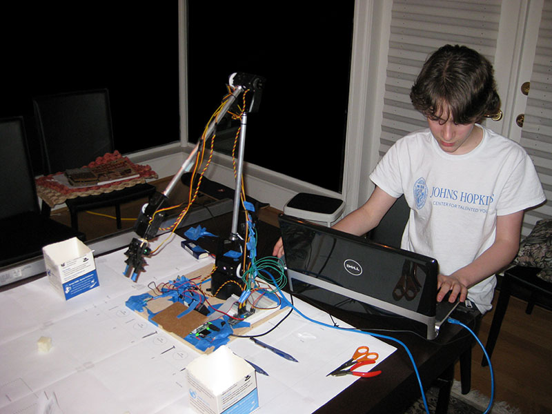

Computer-controlled Robotic Arm
This was a timed event in the 2013 Science Olympiad. Each robotic arm had 3 minutes to pick up items and deposit them in bins. User control is through a laptop's mouse and keyboard. Those instructions are transmitted to a Raspberry Pi, which in turns drives servo controllers. Moving the mouse controls lateral motion of the arm, while keystrokes control up/down, open/close, etc. Composite actions such as pickup-move-deposit are pre-programmed as keystrokes.
The robotic arm, along with the laptop and mouse used to control it. The Raspberry Pi and servo control electronics are on the board.
Testing the robotic arm. Note the nails and pens arrayed around it as pick-up items and the cut-off milk cartons as the drop bins. Control is through the mouse and keyboard, but once the claw was positioned above an object, software took over and picked up the object and dropped it into the target bin.
Science Olympiad Competition
Mechanical Architecture
The arm consists of computer-controlled servos at each joint connecting the arm segments and claw. Initially I printed the arms with a Makerbot printer, but found the plastic too brittle, so I replaced them with pre-fab brackets and arms.
There are 5 servo-operated joints:
Control Architecture
User control is through a laptop's mouse and keyboard. Those instructions are transmitted to a Raspberry Pi, which in turns drives servo controllers. Moving the mouse controls lateral motion of the arm, while keystrokes control up/down, open/close, etc. Composite actions such as pickup-move-deposit are pre-programmed as keystrokes.
The control architecture is the core of the project. There are three levels:
- User Control - the laptop and mouse
- Program control of the servos - the Raspberry Pi
- Electrical control of the servos - the servo control board
User Control
The user controls operation with the mouse and keyboard:
- Moving the mouse directly moves the claw in the X-Y plane - it tracks the mouse movements.
- Up/down and open/close are controlled through keystrokes.
- Pick up-move-deposit - this is a single programmed sequence in which an object (e.g. a pencil) is picked up by the claw, moved into position over a drop container, and dropped into the container. This is initiated by a keystroke once the claw is positioned over the object.
The UI is controlled by a Java program running on the laptop, fielding the mouse movements and keystrokes.
Program Control
The servos are controlled by a Raspberry Pi. A Python program on the Pi accepts commands from the laptop converts those commands into the desired servo controls. It then controls the servos through a servo control board, which it communicates with simple I2C networking. The servo control board then directly drives the servos with a standard PWM i/f.
Originally the Java program on the laptop used SSH to drop files on the the Raspberry Pi as a mean for communicating with the Python program. This turned out to be too slow, so I changed this use an ethernet to talk to a Java program on the Pi that then uses Linux pipes to directly send commands to the Python program. The Python program accepts these commands and issues them through a servo-control library to issue directives to the servo control board.
Electrical Control
The five servos are all controlled directly from the servo control board
Operation
The X-Y position of the arm was controlled by moving the mouse. The claw tracked the mouse position, as shown in the video.
Z movements and claw operation were controlled via the keyboard and mouse buttons:
- r - home position
- left / right mouse buttons - open and close the claw
- scroll wheel - up and down
- Shift - switch the mouse from controlling the shoulder to controlling the wrist
- Ctrl - free the mouse
In addition, automated compound operations were also controlled by keystrokes. At the time of the contest, the main one I had working was:
- 1, 2, 3,... - compound commands to move the claw to drop target 1, 2, etc and drop the load into it.
Design decisions and tradeoffs
1. Software control rather than direct R/C control
The first major decision was to use software control rather than direct R/C control. Other entrants in the event used direct RC-control for their robots - a hand-held controller talking directly to the motors (as if driving an RC car). From online postings apparently others have also used software control, but we didn't see any at the event.
There were a number of important tradeoffs with software control:
- The servo motors aren't as stable or powerful as direct electric motors. This made the arm slower and required a little time for it to settle down after moving. This of course negatively affected performance.
- Clearly this was a more complex architecture than direct R/C control and took more time to build. And of course complexity means more points of failure.
- On the plus side, with the software control I was able to build higher-level automated operations. In particular once I zero-ed on a object to be picked up, I would press a single key and it would pick up the object, move it over to one of the bins, and drop it. This composite operation was much faster than doing them by hand. Ultimately the entire contest could be operated by a single keypress where the system takes off and automatically picks up all the items and deposits them in the highest-payoff bins. But I didn't have time to fully develop that this year.
2. Networking
The basic setup was a Java program on the laptop talking over ethernet to a Java program on the Pi. Getting this networking working was surprisingly difficult. It took a lot of time and I explored taking alternative routes such as using SSH to deposit files on the Pi that the Python program would read, instead of using the Java code as an intermediary. In the end the problem was that they were trying to operate on different subnets. Fixing it required getting the right network gateway settings (they both needed static IPs and the same gateway settings). Once we figured that out it was easy.
3. Python
I used a Python program to talk to the servo control board - there wasn't any fundamental reason to use Python here, but the control board's sample program was written in Python and it was fairly arcane so I didn't want to rewrite it in Java. Initially I had the Java program communicate with the Python program by writing files, then converted it to direct communication via Linux pipes.
4. Pi vs Arduino
I choose the Pi mainly because it runs Linux and seemed more interesting. Arduino actually would have worked better because it's easier to access the GPIO (General Input/Output) pins, which are the pins that talk PWM. Also the Pi only has one pin that talks PWM. To work around that limitation, I incorporated a servo control board with 16 PWM pins, which communicates with the Pi via the I2C networking protocol. The Pi communicated from the laptop over ethernet, Java program to Java program. If it was an Arduino I would have used USB (there's a Java library for communicating with Arduinos over USB). There was no real functional advantages to using the Pi over Arduino. With my particular architecture using Arduino would have also skipped the Python program since the servo control board wouldn't have been needed and the Arduino would have directly communicated with the servos.
5. Structural material
Originally I used wooden dowels for the arms and 3D-printed motor mounts but couldn't get strong enough joints, so then I went with a kit for the arms and joints. Also the servos come with a horn as an attachment point, but I didn't want to put the entire weight/force of the arms on that and the kit came with a bearing and way to attach the arm to the other side of the servo (the kit was designed for those servos). Also at the time I was printing from a Makerbot Thing-O-Matic and couldn't see how to adjust the fill density. With my current Ultimaker there's a control for that, so printed pieces can be denser and stronger.
Future improvements
A big benefit of software control is the ability to program composite operations. There's no reason the entire contest couldn't be run with a single button press, where the system then takes off and automatically picks up all the items and deposits them in the highest-payoff bins. I think that would be a faster than even a practiced human operator could perform with an RC controller.
Either in place of pre-programming the operations or to augment their operation, I'd like to incorporate computer vision next time so the system can automatically zero-in on the objects.